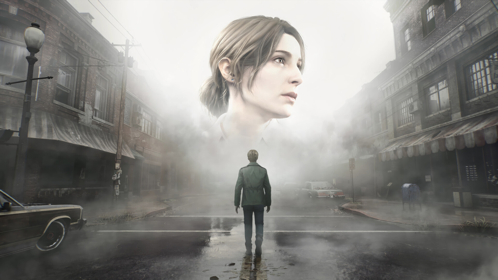
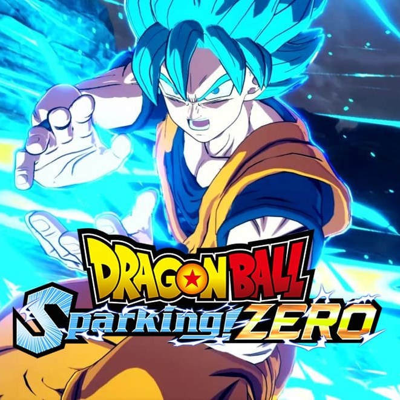

Página Inicial

Silent Hill 2 (Remake)
Data de Lançamento: 08/09/2024
James Sunderland recebe uma carta de sua esposa Mary, porém ela veio a óbito devido a uma doença há 3 anos.
Nesta carta, Mary diz que está esperando por ele no local favorito do casal, em Silent Hill.
Você terá a coragem de explorar a misteriosa cidade de Silent Hill e achar a esposa falecida de James ?
Onde Obter ?
Playstation Store
Steam
 Black Myth: Wukong
Data de Lançamento: 20/08/2024
A história é baseada em "Jornada para o Oeste", um dos Quatro Grandes Romances Clássicos da literatura do país.
Black Myth: Wukong
Data de Lançamento: 20/08/2024
A história é baseada em "Jornada para o Oeste", um dos Quatro Grandes Romances Clássicos da literatura do país.
Você assume o papel do Predestinado e tem a responsabilidade de encarar os desafios e as maravilhas do mundo
Para desvendar a verdade obscura por trás de uma lenda gloriosa do passado.
Onde Obter ?
Playstation Store
Steam

Dragon Ball Sparking Zero
Data de Lançamento: 11/10/2024
'Dragon Ball: Sparking! Zero' traz a lendária jogabilidade da série Budokai Tenkaichi e eleva a níveis totalmente novos.
iberte o espírito de luta dentro de você e leve a luta para arenas que desmoronam e reagem ao seu poder enquanto a batalha continua.
Onde Obter ?
Playstation Store
Microsoft Store
Steam